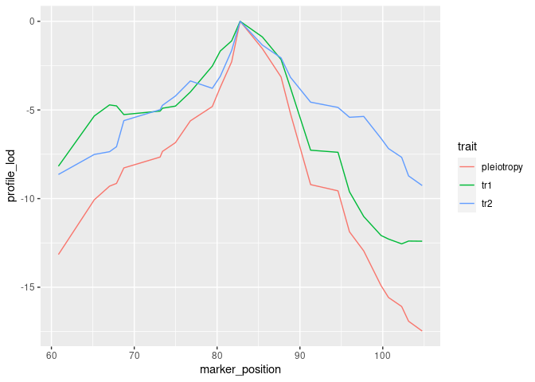

Overview
qtl2pleio is a software package for use with the R statistical computing environment. qtl2pleio is freely available for download and use. I share it under the MIT license. The user will also want to download and install the qtl2 R package.
Click here to explore qtl2pleio within a live Rstudio session in “the cloud”.
Contributor guidelines
We eagerly welcome contributions to qtl2pleio. All pull requests will be considered. Features requests and bug reports may be filed as Github issues. All contributors must abide by the code of conduct.
Technical support
For technical support, please open a Github issue. If you’re just getting started with qtl2pleio, please examine the vignettes on the package’s web site. You can also email frederick.boehm@gmail.com for assistance.
Goals
The goal of qtl2pleio is, for a pair of traits that show evidence for a QTL in a common region, to distinguish between pleiotropy (the null hypothesis, that they are affected by a common QTL) and the alternative that they are affected by separate QTL. It extends the likelihood ratio test of Jiang and Zeng (1995) for multiparental populations, such as Diversity Outbred mice, including the use of multivariate polygenic random effects to account for population structure. qtl2pleio data structures are those used in the rqtl/qtl2 package.
Installation
To install qtl2pleio, use install_github() from the devtools package.
install.packages("qtl2pleio")
You may also wish to install the R/qtl2. We will use it below.
install.packages("qtl2")
Example
Below, we walk through an example analysis with Diversity Outbred mouse data. We need a number of preliminary steps before we can perform our test of pleiotropy vs. separate QTL. Many procedures rely on the R package qtl2. We first load the qtl2 and qtl2pleio packages.
Reading data from qtl2data repository on github
We’ll consider the DOex data in the qtl2data repository. We’ll download the DOex.zip file before calculating founder allele dosages.
file <- paste0("https://raw.githubusercontent.com/rqtl/", "qtl2data/master/DOex/DOex.zip") DOex <- read_cross2(file)
probs <- calc_genoprob(DOex)
Let’s calculate the founder allele dosages from the 36-state genotype probabilities.
pr <- genoprob_to_alleleprob(probs)
We now have an allele probabilities object stored in pr.
We see that pr is a list of 3 three-dimensional arrays - one array for each of 3 chromosomes.
Kinship calculations
For our statistical model, we need a kinship matrix. We get one with the calc_kinship function in the rqtl/qtl2 package.
kinship <- calc_kinship(probs = pr, type = "loco")
Statistical model specification
We use the multivariate linear mixed effects model:
vec(Y) = Xvec(B) + vec(G) + vec(E)
where Y contains phenotypes, X contains founder allele probabilities and covariates, and B contains founder allele effects. G is the polygenic random effects, while E is the random errors. We provide more details in the vignette.
Simulating phenotypes with qtl2pleio::sim1
The function to simulate phenotypes in qtl2pleio is sim1.
# set up the design matrix, X pp <- pr[[2]] #we'll work with Chr 3's genotype data
#Next, we prepare a design matrix X X <- gemma2::stagger_mats(pp[ , , 50], pp[ , , 50])
# assemble B matrix of allele effects B <- matrix(data = c(-1, -1, -1, -1, 1, 1, 1, 1, -1, -1, -1, -1, 1, 1, 1, 1), nrow = 8, ncol = 2, byrow = FALSE) # set.seed to ensure reproducibility set.seed(2018-01-30) Sig <- calc_Sigma(Vg = diag(2), Ve = diag(2), kinship = kinship[[2]]) # call to sim1 Ypre <- sim1(X = X, B = B, Sigma = Sig) Y <- matrix(Ypre, nrow = 261, ncol = 2, byrow = FALSE) rownames(Y) <- rownames(pp) colnames(Y) <- c("tr1", "tr2")
Let’s perform univariate QTL mapping for each of the two traits in the Y matrix.
s1 <- scan1(genoprobs = pr, pheno = Y, kinship = kinship)
Here is a plot of the results.

And here are the observed QTL peaks with LOD > 8.
find_peaks(s1, map = DOex$pmap, threshold=8) #> lodindex lodcolumn chr pos lod #> 1 1 tr1 3 82.77806 20.703383 #> 2 2 tr2 3 82.77806 14.417924 #> 3 2 tr2 X 48.10040 8.231551
Perform two-dimensional scan as first step in pleiotropy vs. separate QTL hypothesis test
We now have the inputs that we need to do a pleiotropy vs. separate QTL test. We have the founder allele dosages for one chromosome, i.e., Chr 3, in the R object pp, the matrix of two trait measurements in Y, and a LOCO-derived kinship matrix, kinship[[2]].
out <- suppressMessages(scan_pvl(probs = pp, pheno = Y, kinship = kinship[[2]], # 2nd entry in kinship list is Chr 3 start_snp = 38, n_snp = 25 ))
Create a profile LOD plot to visualize results of two-dimensional scan
To visualize results from our two-dimensional scan, we calculate profile LOD for each trait. The code below makes use of the R package ggplot2 to plot profile LODs over the scan region.
library(dplyr) out %>% calc_profile_lods() %>% add_pmap(pmap = DOex$pmap$`3`) %>% ggplot() + geom_line(aes(x = marker_position, y = profile_lod, colour = trait))

Calculate the likelihood ratio test statistic for pleiotropy v separate QTL
We use the function calc_lrt_tib to calculate the likelihood ratio test statistic value for the specified traits and specified genomic region.
(lrt <- calc_lrt_tib(out)) #> [1] 0
Bootstrap analysis to get p-values
Before we call boot_pvl, we need to identify the index (on the chromosome under study) of the marker that maximizes the likelihood under the pleiotropy constraint. To do this, we use the qtl2pleio function find_pleio_peak_tib.
(pleio_index <- find_pleio_peak_tib(out, start_snp = 38)) #> log10lik13 #> 50
set.seed(2018-11-25) # set for reproducibility purposes. b_out <- suppressMessages(boot_pvl(probs = pp, pheno = Y, pleio_peak_index = pleio_index, kinship = kinship[[2]], # 2nd element in kinship list is Chr 3 nboot = 10, start_snp = 38, n_snp = 25 ))
(pvalue <- mean(b_out >= lrt)) #> [1] 1
Citation information
citation("qtl2pleio") #> #> To cite qtl2pleio in publications use: #> #> Boehm FJ, Chesler EJ, Yandell BS, Broman KW (2019) Testing pleiotropy #> vs. separate QTL in multiparental populations G3 #> https://www.g3journal.org/content/9/7/2317 #> #> A BibTeX entry for LaTeX users is #> #> @Article{Boehm2019testing, #> title = {Testing pleiotropy vs. separate QTL in multiparental populations}, #> author = {Frederick J. Boehm and Elissa J. Chesler and Brian S. Yandell and Karl W. Broman}, #> journal = {G3}, #> year = {2019}, #> volume = {9}, #> issue = {7}, #> url = {https://www.g3journal.org/content/9/7/2317}, #> eprint = {https://www.g3journal.org/content/ggg/9/7/2317.full.pdf}, #> }